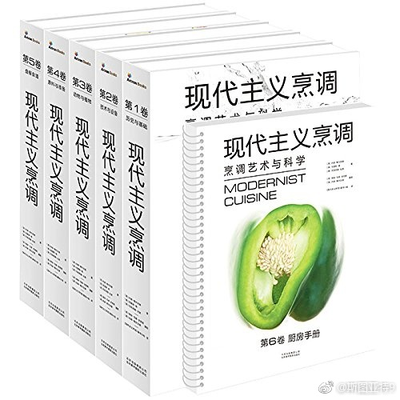

原来烹饪领域的圣经是这一本，有这么贵……立刻觉得这个领域高大上了 Modernist Cuisine: The Art and Science of Cooking 网页链接 中文版：现代主义烹调:烹调艺术与科学(套装共6册) 北京雅昌艺术图书有限公司 。 网页链接（分享自 @亚马逊） 
@新浪新闻:【厉害了！TFBOYS王俊凯的文章上了光明日报】光明日报今天刊登王俊凯的文章《向生活学习，向人民学习》。#王俊凯#在文中说，作为北京电影学院的一员，一定不忘初心、尊师重道、薪火相传...全文如下↓↓小凯文笔咋样~有点太优秀了吧~厉害了！ TFBOYS王俊凯的文章上了光明日报


 】光明日报今天刊登王俊凯的文章《向生活学习，向人民学习》。#王俊凯#在文中说，作为北京电影学院的一员，一定不忘初心、尊师重道、薪火相传...全文如下↓↓小凯文笔咋样~
】光明日报今天刊登王俊凯的文章《向生活学习，向人民学习》。#王俊凯#在文中说，作为北京电影学院的一员，一定不忘初心、尊师重道、薪火相传...全文如下↓↓小凯文笔咋样~ 有点太优秀了吧~
有点太优秀了吧~ 厉害了！ TFBOYS王俊凯的文章上了光明日报
厉害了！ TFBOYS王俊凯的文章上了光明日报